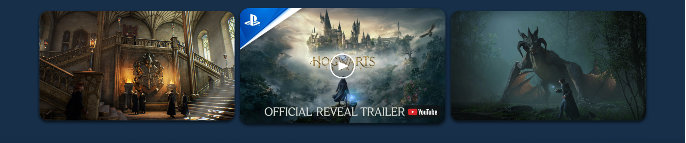
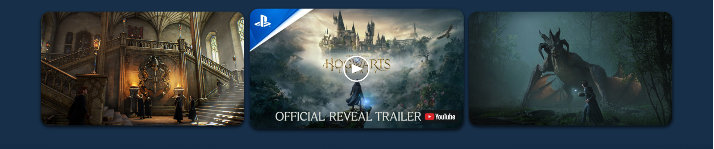
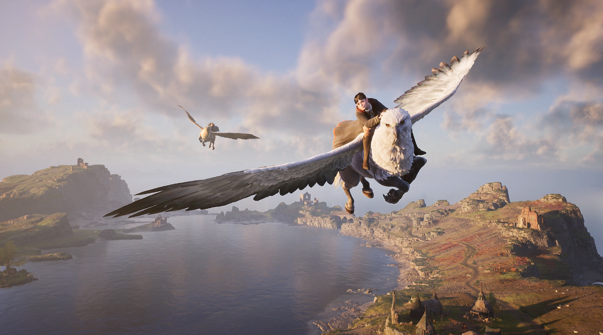
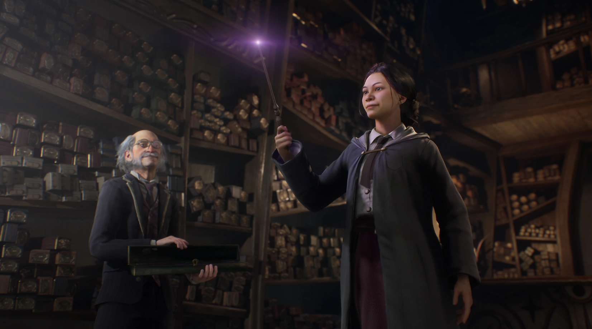
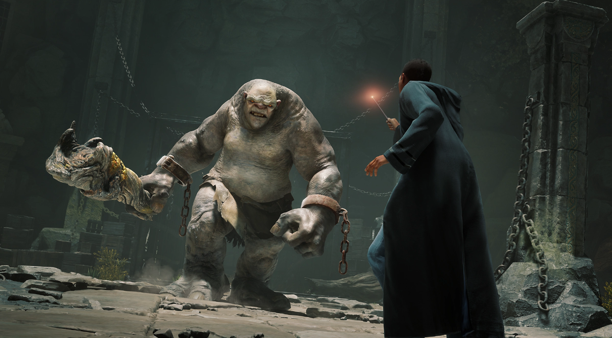
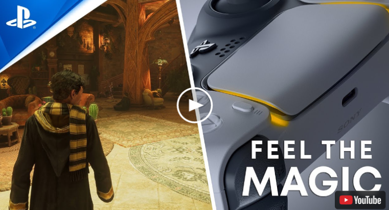

HOGWARTS LEGACY
Зміст
ЩО ТАКЕ HOGWARTS LEGACY?
Станьте учасником подій, що розгортаються на території Гоґвортсу у 1800-х роках, і вирішіть долю чарівного світу.
Hogwarts Legacy – це захоплююча рольова гра з відкритим світом, який відомий вам по книгах про Гаррі Поттера.
Вирушайте у подорож по давно знайомих і абсолютно нових місцях, знаходьте фантастичних тварей, змінюйте свого персонажа, варіть зілля, вивчайте заклинання, розвивайте таланти, щоб стати справжнім чарівником.
таньте учасником подій, що розгортаються на території Гоґвортсу у 1800-х роках. Ваш персонаж – студент, який володіє ключем до стародавньої таємниці, яка здатна розірвати чарівний світ на частини. Відкрийте для себе неповторне відчуття життя в Гоґвортсі. Знаходьте союзників і боріться із темними чарівниками, щоб вирішити долю чарівного світу.
Ваша спадщина – це те, що ви робите. Напишіть свою історію.
Hogwarts Legacy – ключові особливості
Досліджуйте відкритий світ
Світ чарівників чекає на вас. Вільно розгулюйте Гоґвортсом, Гоґсмідом, Забороненим лісом і околицями.
Станьте чарівницею або чарівником, яким ви хочете бути
Вивчайте заклинання, варіть зілля, вирощуйте рослини та доглядайте за чарівними тваринами. Наведіть порядок у будинку свого факультету, будуйте стосунки з оточуючими та опануйте унікальні навички, щоб стати чарівницею або чарівником, яким ви завжди хотіли бути.
Пориньте у нову пригоду у чарівному світі
Перенесіться у найбільш незвідану епоху чарівного світу і дізнайтеся про таємниці його минулого. Воюйте проти тролів, темних чарівників, гоблінів та багатьох інших створінь, перш ніж зіткнутися з небезпечним лиходієм, що загрожує долі світу чарівників.
Як інноваційні функції PS5 доповнюють Hogwarts Legacy
Натисни на зображення 🡇
-
Відчуйте магію
Відчуйте ейфорію від польоту на спині гіпогрифа за допомогою тактильної віддачі або силу стародавньої магії за допомогою адаптивних спускових гачків. Відчуйте чари на кінчиках ваших пальців з приголомшливими функціями бездротового контролера DualSense. -
Глибокий звук
Виразно чуйте кожен звук, від булькання зілля до потріскування вогню під час використання заклинання Інсендіо. Технологія Tempest 3D Audio консолі PS5 перенесе вас у епіцентр чудес і небезпек чарівного світу. Чуйте рев угорської рогохвістки та удари заклинань об ваш щит, поки ви вчитеся підкоряти магію. -
Неймовірна графіка
Подорожуйте небаченими раніше локаціями у приголомшливій роздільності 4K з HDR. Вивчіть кожен куточок замку Гоґвортс та світу за його стінами та залиште свій унікальний слід у світі чарівників. -
Швидке завантаження сцен
Потужність надшвидкісного SSD консолі PS5 дозволяє витрачати менше часу на завантаження сцен і більше часу на вивчення величезного світу Hogwarts Legacy. Поспішайте на наступний урок коридорами Гоґвортсу, долайте кілометри верхи на мітлі або за секунди переміщуйтеся по світу за допомогою мережі порошку флу – ваша пригода не дасть вам занудьгувати.